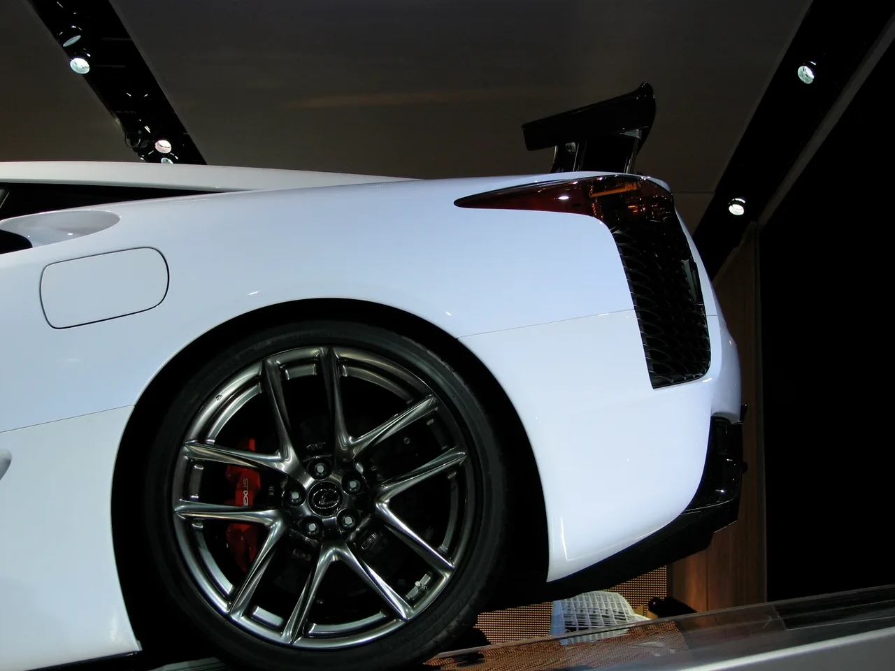
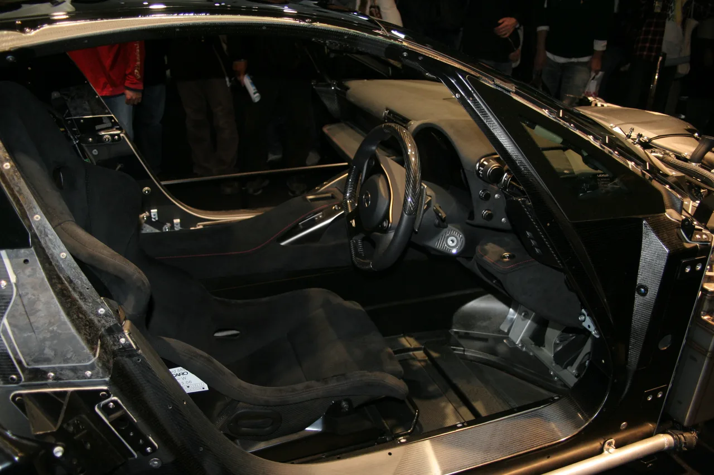
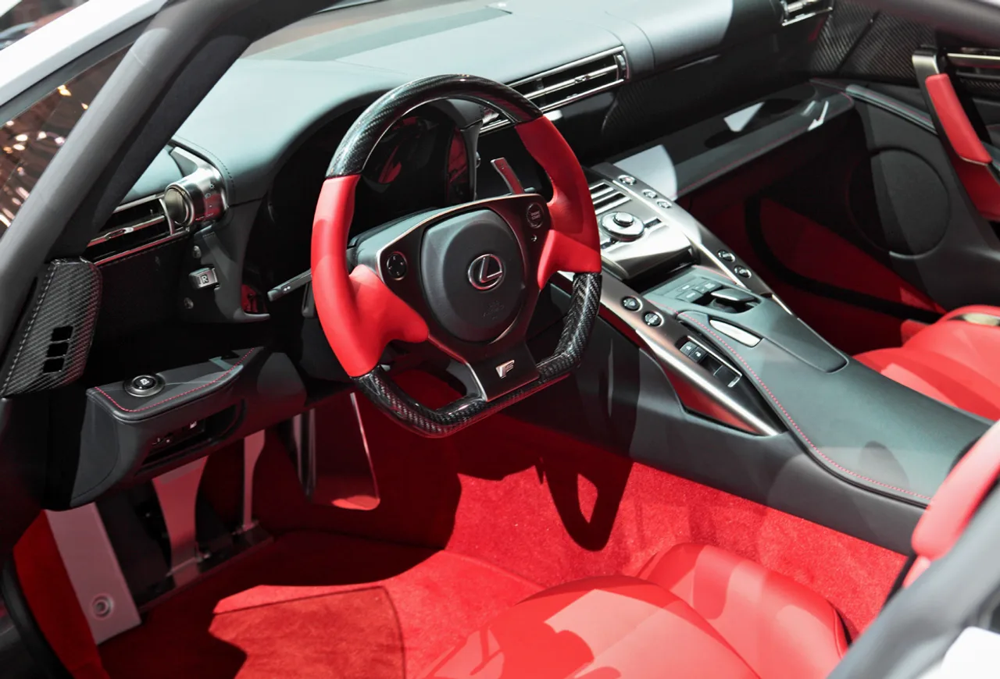

▲ 렉서스 LFA. 전 세계 500대만 생산된 이 슈퍼카 중, 뉘르부르크링 패키지 사양은 단 64대뿐이다
렉서스가 2012년에 만든 슈퍼카 LFA 한 대가 희소성만으로 가치가 4배 가까이 뛰었다는 평가를 받고 있습니다. 이 차량의 원래 판매 가격은 52만2,000달러. 여기에 뉘르부르크링 패키지 옵션 7만 달러와 488번 시리얼 넘버 지정 비용 7만500달러가 추가되며 총 판매가는 66만2,500달러 수준이었습니다. 그런데 지금 시세는 최대 200만 달러에 근접할 수 있다는 것이 시장의 평가입니다.
1. 563마력 V10, 양산차 뉘르부르크링 기록을 세우다
LFA 뉘르부르크링 패키지는 단순한 외장 옵션이 아니었습니다. 563마력 V10 엔진에 개선된 서스펜션, 탄소섬유 공기역학 부품이 더해진 트랙 특화 사양이었습니다. 이 조합으로 뉘르부르크링 노르트슐라이페에서 7분14.64초라는 기록을 세웠는데, 이는 당시 양산차 기준 최고기록이었습니다. 슈퍼카 역사에서도 손꼽히는 성능을 자랑하는 모델인 셈입니다.

▲ LFA의 후면 리어 스포일러와 휠. 뉘르부르크링 패키지는 563마력 V10 엔진과 강화된 서스펜션, 탄소섬유 공력 부품을 갖췄다
2. 500대 중 64대, 그중 미국에는 25대뿐
LFA는 전 세계에 단 500대만 생산됐습니다. 그중에서도 뉘르부르크링 패키지 사양은 64대에 불과하며, 미국에 판매된 물량은 25대뿐입니다. 이번에 다뤄진 차량은 그 25대 중 하나입니다. 이미 극도로 희소한 슈퍼카인데, 여기에 '거의 타지 않은 상태'라는 조건까지 더해지면서 희소성이 한층 더 배가됐습니다.
| 구분 | 내용 |
|---|---|
| 이번 차량 주행거리 | 72마일(약 116km) |
| 이번 차량 예상 가치 | 최대 200만 달러 |
| 비교 차량(2023년 판매) | 약 190만 달러 |
| 비교 차량 주행거리 | 이번 차량의 약 2배 |
| 원래 판매가(2012년) | 약 66만2,500달러 |

▲ LFA의 카본 모노코크 구조. 전량 수작업으로 조립되는 탄소섬유 차체가 이 슈퍼카의 핵심 기술이다
3. "2배 더 탄" 차와 비교해도 격차가 난다
희소성이 가격에 미치는 영향은 비교 사례에서 더 명확히 드러납니다. 이번 차량보다 주행거리가 약 2배 많은 동급 뉘르부르크링 패키지 차량은 2023년 약 190만 달러에 거래됐습니다. 단순 계산으로도, 주행거리가 절반 수준인 이번 차량이 이보다 높은 가치를 인정받는 것은 자연스러운 흐름입니다. 슈퍼카 컬렉터 시장에서는 '거의 새것'이라는 상태가 실질적인 프리미엄으로 직결된다는 것을 보여주는 사례입니다.

▲ LFA의 실내. 레드 가죽과 카본 파이버로 마감된 스티어링 휠은 500대 한정 생산 슈퍼카의 수작업 디테일을 보여준다
4. 정리 — 희소성이 만든 4배의 가치
렉서스 LFA 뉘르부르크링 패키지의 가치 상승은 단순한 인플레이션이 아니라, 극한의 희소성과 완벽한 보존 상태가 만든 결과입니다. 500대 중 64대, 그중에서도 미국 판매분 25대 중 하나이며, 주행거리는 타이타늄 배기관을 데울 정도밖에 안 됩니다. 이런 조건이 겹치면서 원래 판매가의 3배에 근접하는 가치 상승이 만들어졌습니다. 일본 브랜드가 만든 슈퍼카가 페라리·람보르기니 못지않은 컬렉터 시장 가치를 인정받고 있다는 점도, LFA가 남긴 또 하나의 유산입니다.